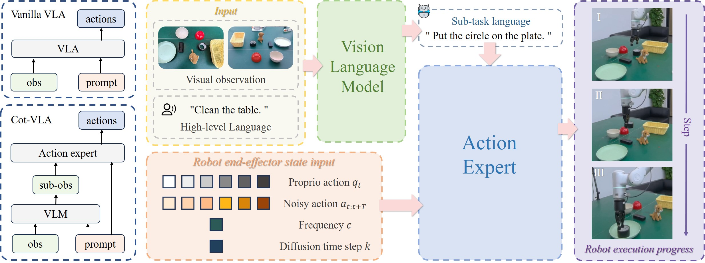
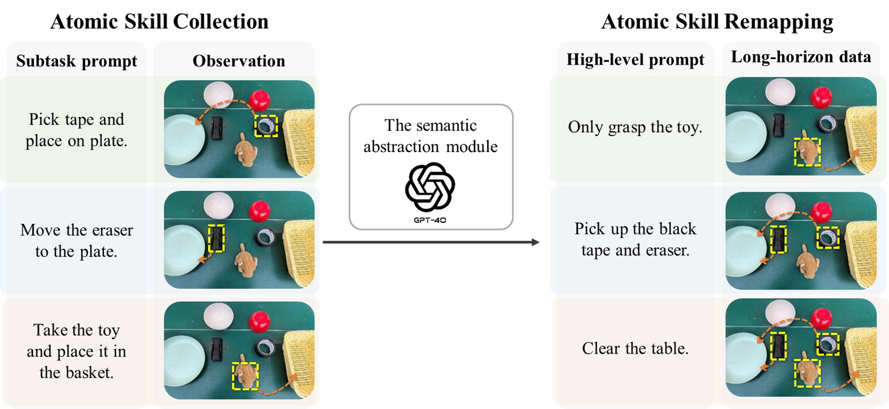
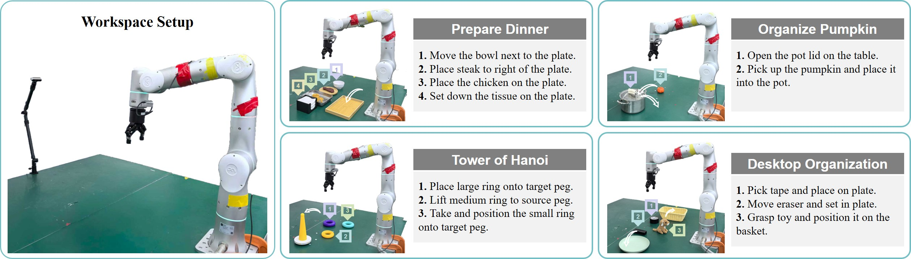
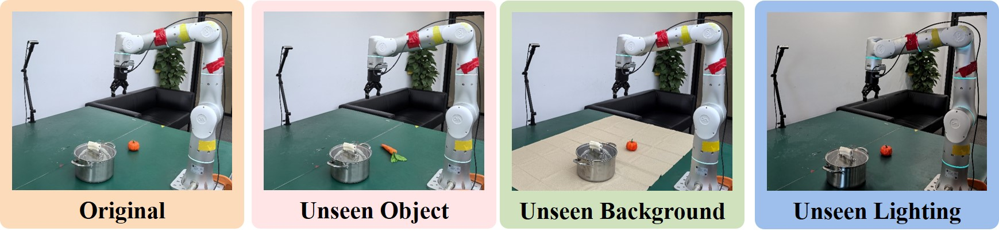
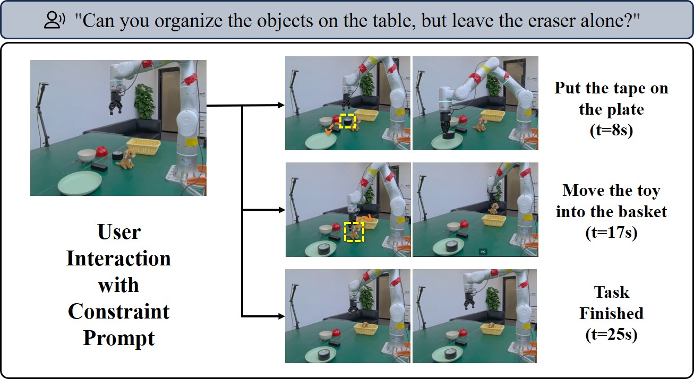
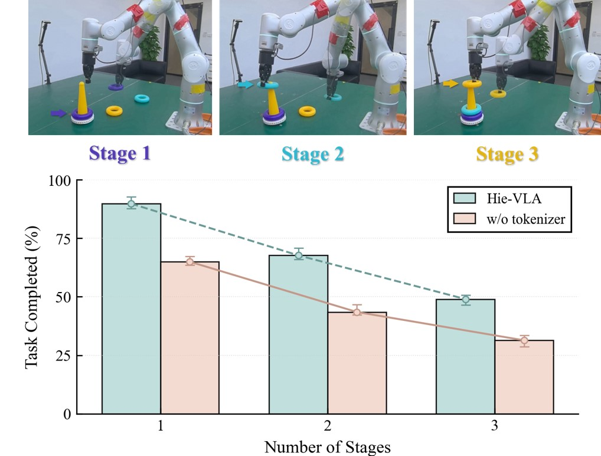
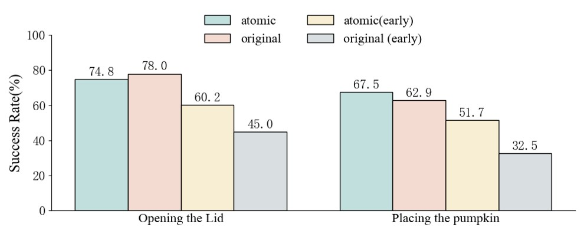

Abstract
Balancing task analysis and execution efficiency is a critical challenge in robotic manipulation. While existing Vision-Language-Action (VLA) foundation policies have shown that using pre-trained vision-language models (VLMs) as the backbone enhances continuous action generation, they still struggle with reasoning subgoals when executing coherent, sequential subtasks in long-horizon tasks. To address this issue, we propose decomposing tasks from the perspective of skill primitives by constructing an atomic skill dataset that facilitates implicit learning of multi-step action capabilities. We present a hierarchical training policy framework that aligns subtask instructions with corresponding atomic skills, coordinating reasoning and execution components to enhance the model's ability to understand observations in dynamic environments and execute subtask actions effectively. Finally, extensive experiments on real robots demonstrate that our model outperforms previous state-of-the-art methods by 11% in long-horizon tasks and demonstrates reliable task reasoning in unseen scenarios.
Model Architecture

Overview of our architecture. Left top: Vanilla VLA directly maps high-level goals and observations to actions. Left bottom: The planner predicts subgoal images, which guide the controller to generate corresponding trajectories. Right: Hie-VLA employs a hierarchical architecture that integrates high-level task planning with low-level motion control. The planner decomposes tasks into sub-atomic skills, while the controller generates executable actions via flow matching.
Atomic Skill Dataset Construction

The process of constructing atomic skill data. Taking the Desktop Organization task as an example, three discrete independent object grasping skills are merged into a temporally continuous long-horizon task with high-level semantics. Each atomic skill represents a single real-world action (e.g., pick, grasp, or place). We leverage large language models to compose atomic skills into extended sequences, generating scalable synthetic datasets for long-horizon tasks.
Real-World Experiments

Robot setup and task visualization for real-world manipulation tasks. We evaluate Hie-VLA with four tasks, each consisting of multiple atomic skills: Organize Pumpkin (2 skills), Desktop Organization (3 skills), Tower of Hanoi (3 skills), and Prepare Dinner (4 skills). The system employs a Flexiv Rizon 4 robot with two Intel RealSense D435 cameras for visual observations.
Results
Real-World Evaluation
To comprehensively evaluate our model, we compare Hie-VLA against strong baselines in robotic manipulation: RDT, π0, and π0.5. All models are finetuned on our collected atomic skill dataset, initialized from publicly available pretrained weights, under the same experimental setup. Task evaluation proceeds as follows: skills without sequential dependencies are evaluated independently; otherwise, they are tested in order, with any unsuccessful action leading to immediate termination. Each task is evaluated 300 times.
Table I: Real-world evaluation of Hie-VLA and baselines across multiple tasks. All methods are trained using the same atomic skill dataset. Success rates (%) are reported for each atomic skill stage.
| Method | Organize Pumpkin | Desktop Organization | Tower of Hanoi | Prepare Dinner | Avg. | ||||||||
|---|---|---|---|---|---|---|---|---|---|---|---|---|---|
| 1 | 2 | 1 | 2 | 3 | 1 | 2 | 3 | 1 | 2 | 3 | 4 | ||
| RDT | 71.4 | 57.1 | 62.5 | 40.2 | 67.5 | 44.3 | 22.5 | 10.3 | 78.3 | 54.2 | 68.4 | 27.2 | 50.3 |
| π0 | 72.6 | 45.4 | 87.5 | 54.5 | 69.2 | 38.2 | 18.5 | 8.6 | 84.2 | 62.4 | 71.5 | 40.6 | 54.4 |
| π0.5 | 78.5 | 67.5 | 84.5 | 67.5 | 72.7 | 81.5 | 54.6 | 20.5 | 85.0 | 78.5 | 76.0 | 45.5 | 67.7 |
| Ours | 86.5 | 77.5 | 92.5 | 78.2 | 80.8 | 89.8 | 67.7 | 49.0 | 89.6 | 74.7 | 78.5 | 50.0 | 76.2 |
Our model achieves an average success rate of 76.2% across 4 tasks and 12 atomic skill stages, surpassing the previous state-of-the-art methods RDT and π0.5 by margins of 33% and 11%, respectively. Through embedding subtask labels in VLM training, our model leverages pretrained knowledge for task decomposition and guided action generation. Notably, Hie-VLA achieves superior performance on 11 out of 12 atomic tasks, demonstrating the robustness of its skill execution. The improvement is particularly significant in multi-step tasks such as Tower of Hanoi, where our method achieves 49.0% on the hardest third stage compared to only 20.5% for π0.5.
Generalization to Unseen Scenarios
To evaluate the generalization capability of Hie-VLA in real-world settings, we conduct experiments on the "Organize Pumpkin" task across three out-of-distribution (OOD) scenarios: unseen manipulated objects, low lighting, and complex backgrounds. These scenarios assess whether the model can extract task-relevant information while remaining robust to visual distractions.

Comparison of performance across different accuracy in unseen scenarios. These scenarios assess whether the model can extract task-relevant information while remaining robust to distractions.
| Method | Unseen Obj | Unseen Lighting | Unseen BG | Avg. |
|---|---|---|---|---|
| RDT | 57.5 | 22.5 | 18.1 | 32.7 |
| π0 | 62.5 | 54.2 | 55.8 | 57.5 |
| π0.5 | 65.0 | 62.5 | 52.5 | 60.0 |
| Ours | 72.5 | 78.2 | 75.0 | 75.2 |
Our model demonstrates strong generalization capabilities and outperforms all baselines, achieving an average of 75.2% compared to 60.0% for π0.5. The improvement is especially pronounced under unseen lighting (78.2% vs. 62.5%) and unseen backgrounds (75.0% vs. 52.5%), highlighting the importance of staged training with heterogeneous modality inputs in Hie-VLA to improve robustness to perceptual perturbations.
Language-Constrained Execution
A key advantage of Hie-VLA is its ability to understand and follow language constraints during task execution. The policy supports real-time user intervention to update information, provide feedback, or completely change the task—a practical capability for Human-Robot Interaction (HRI).

The process of executing actions under language constraints. The robot avoids restricted skills based on constraints specified in the dialogue.
Under constrained prompts (e.g., "Organize the table except the eraser"), the model correctly executes specific actions while avoiding prohibited operations. This is enabled by two factors: (1) Hie-VLA can understand instruction constraints and provide correct subtask prompts for action generation, and (2) the atomic skill dataset enriches data diversity by incorporating high-level semantic information across different action combinations, enabling the model to reason about which skills to execute and which to skip.
Ablation Study
Discrete Actions Inference
We trained Hie-VLA with and without the action tokenizer to evaluate whether discrete action tokens help align subtask annotations during VLM training. The comparison is conducted on the Tower of Hanoi task.

Performance comparison between Hie-VLA and w/o-tokenizer across different stages in the Tower of Hanoi task.
The results clearly illustrate that incorporating discrete action tokens enhances subtask success rates. This indicates that discrete actions facilitate the distinction between different atomic skills, enabling the model to reason about correct skill instructions in dynamic environments. Without action grounding, the VLM relies solely on language semantics, which is insufficient for distinguishing between physically similar but semantically different operations.
Benefits of Atomic Skill Dataset
To evaluate the effectiveness of our atomic skill dataset, we collect an equal amount of long-horizon data (two-step sequences) for the Organize Pumpkin task as the baseline (denoted the original dataset) and finetune π0.5 on each dataset for 140K steps using 8 RTX 4090 GPUs.

Performance comparison of models trained on the atomic and original datasets across two sequential stages of the Organize Pumpkin task.
Atomic training achieves comparable final success rates while better learning sequential dependencies between skills. Notably, atomic training reaches higher success rates in half the training steps (denoted as early training), as the atomic dataset provides richer action diversity through skill combinations, significantly improving data efficiency. Furthermore, atomic skill collection is substantially faster than recording full multi-step trajectories, providing a scalable approach for long-horizon task dataset construction.
BibTeX
@article{hievla2026,
title={Hie-VLA: A Hierarchical Vision-Language-Action Model for Learning Long-horizon Robotic Manipulation from Atomic Skill Dataset},
author={TODO: Add author names},
year={2026},
url={https://yijie252.github.io/hie-vla_project/}
}